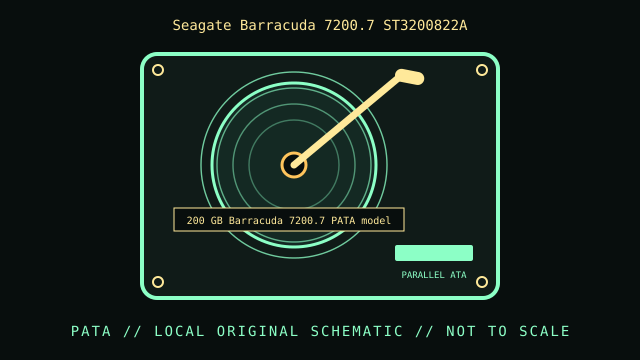

[ INDIVIDUAL COMPONENT // HARD DISK DRIVE ]
Seagate Barracuda 7200.7 ST3200822A
200 GB Barracuda 7200.7 PATA model. This record is limited to the exact model and documented variant; related model numbers, revisions and capacities can have different interfaces and specifications.

IDENTIFICATION: Match the complete label, suffix, firmware and drive inquiry with the cited model documentation. Do not infer sector format or recording method from product family alone.
Verified model specifications
| Dedicated catalog subcategory | PATA / IDE desktop drives |
|---|---|
| Exact model | Seagate Barracuda 7200.7 ST3200822A |
| Product generation | 200 GB Barracuda 7200.7 PATA model |
| Form factor | 3.5-inch desktop; this classification is not a dimensional drawing. |
| Interface | Parallel ATA, Ultra ATA/100. |
| Capacity, performance, sector / recording details | 200 GB formatted class; 7200 RPM; 8 MB cache on ST3200822A documentation. Logical sector presentation and usable capacity depend on drive revision and host configuration. |
| Compatibility | Requires a PATA controller with suitable LBA support; use correct 40-pin cable orientation and model-specific jumper selection. Check BIOS support for full capacity. |
Handling, service & preservation
- Follow the 7200.7 manual’s handling, mounting and power guidance. Avoid repeated retries on weak media; make and verify a sector-level copy before any filesystem repair.
- Photograph the full label, board marks, connectors, jumpers/carrier, and date/firmware codes before service; retain the exact model suffix with collection metadata.
- Never open a hard drive outside a qualified clean environment. Stop repeated power-on attempts if the unit clicks, drops offline, or develops read errors.
- Preserve source data by making independent copies and validating checksums; SMART/self-tests cannot guarantee reliability. Distinguish measured condition from manufacturer specifications.
Model-specific source
- Seagate Barracuda 7200.7 Product Data Sheet (manufacturer family sheet)Seagate 7200.7 sheet covers the 200 GB PATA capacity class; identify the full ST3200822A suffix on the actual label.
For variants with family manuals, use the model-specific table and document revision that matches the drive label.